Brand Spotlight: Completedworks
29 Nov 2024 · Written by Chompak Koonnawarote
*Add to cart
When I first come across this brand on net-a-porter, I was captivated by their pearl-hugging vases and crumpled trays. The uniqueness of their designs- transforming hard materials into soft and malleable structures is captivating. Not to mention eye catching! I particularly love their brand image and how each piece is photographed to encapsulate the feeling of freedom and flow. Oh, and their jewellery is second to none. Elevated basics. IYKYK. Subtle elegance. Find some of my favourite pieces below.
Homeware
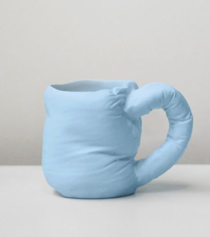
Unrealised Potential Mug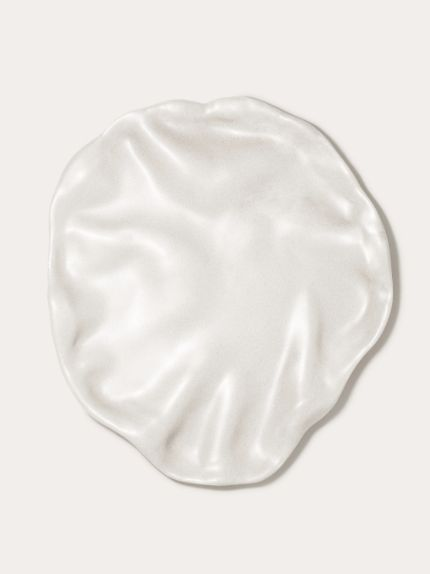
The Perfect Plate to Confound an In‐Law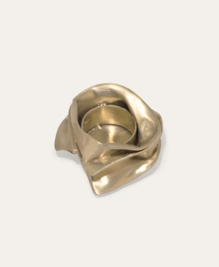
Candle Holder in Brushed Brass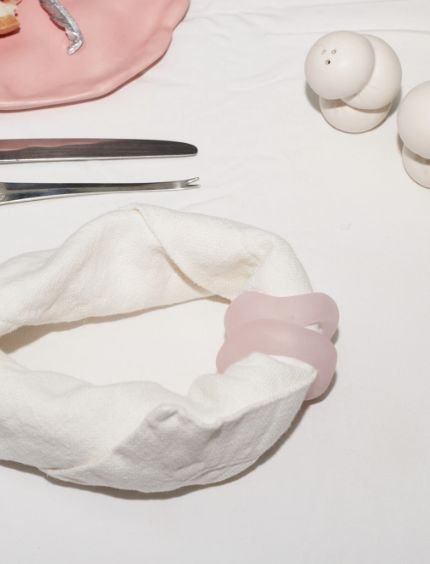
Resin Napkin Rings in Matte Rose Quartz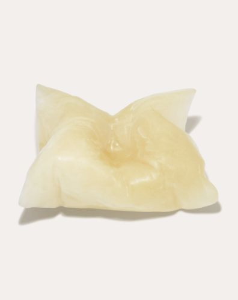
Resin Cushion in Matte Lemon Quartz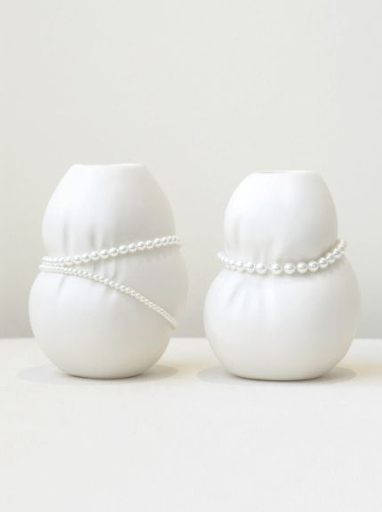
Small Vessels in Matte White w/ Faux PearlsEarrings
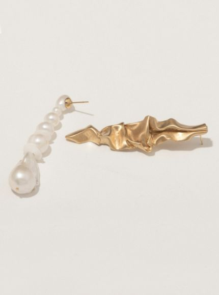
Crumple Pearl and Gold Earrings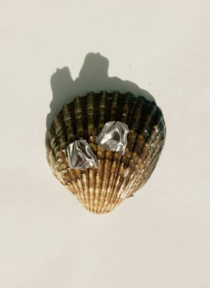
Ruffle Ear Cuff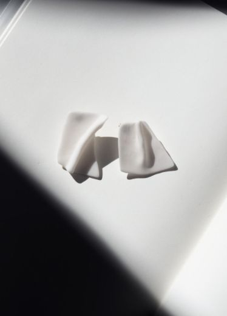
"Notsobig" Groundswell Earrings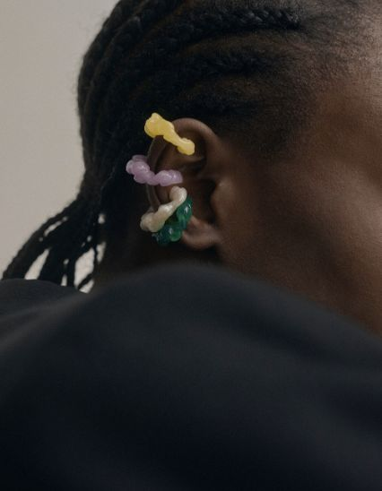
Pleat EarringsBracelet cuffs
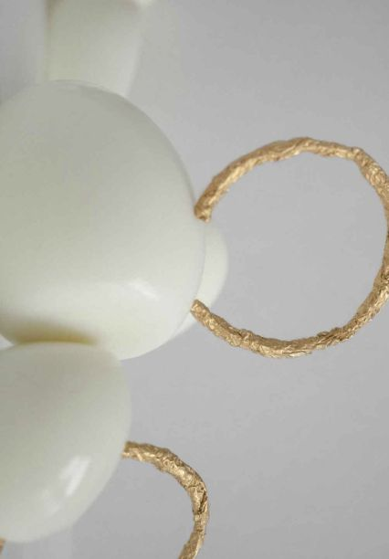
Foil Gold Plated Cuff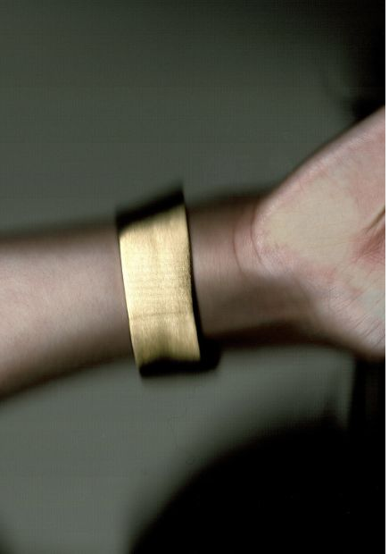
Something of Vast Importance is Being Communicated Cuff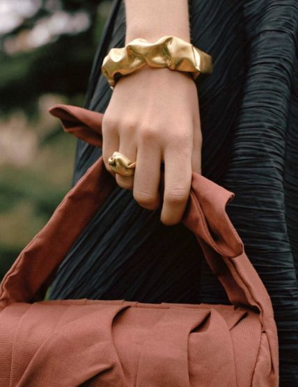
Scrunch Gold Plated CuffRings
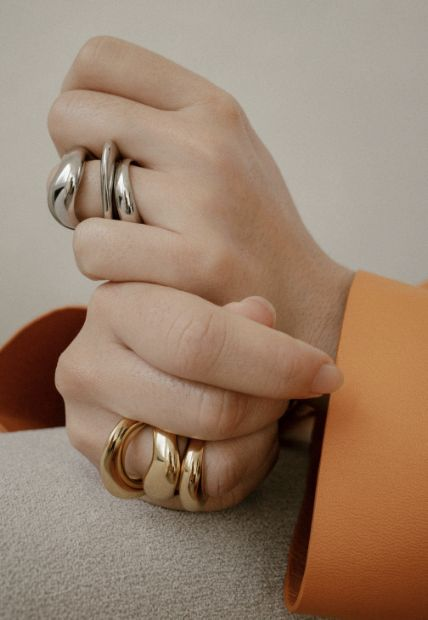
The Best Place to be a Puffin Ring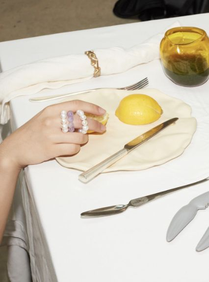
One [Blank] Can Change the World Ring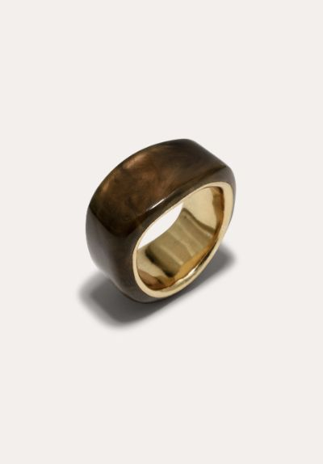
A Virtuous Circle? Tortoise Shell Signet Ring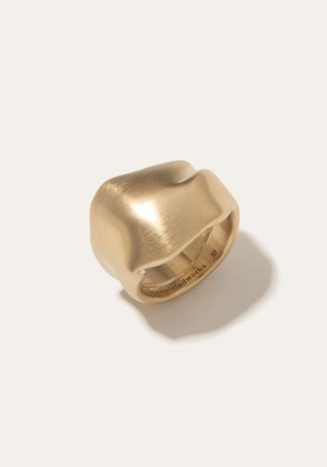
Post‐Capital Stacking Rings